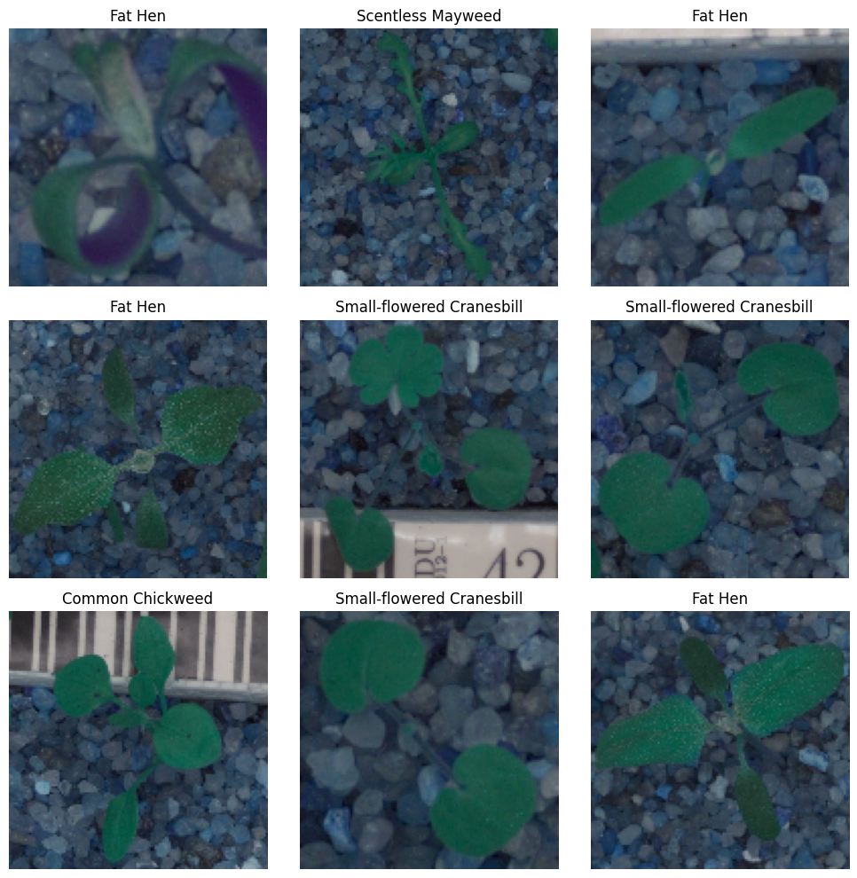
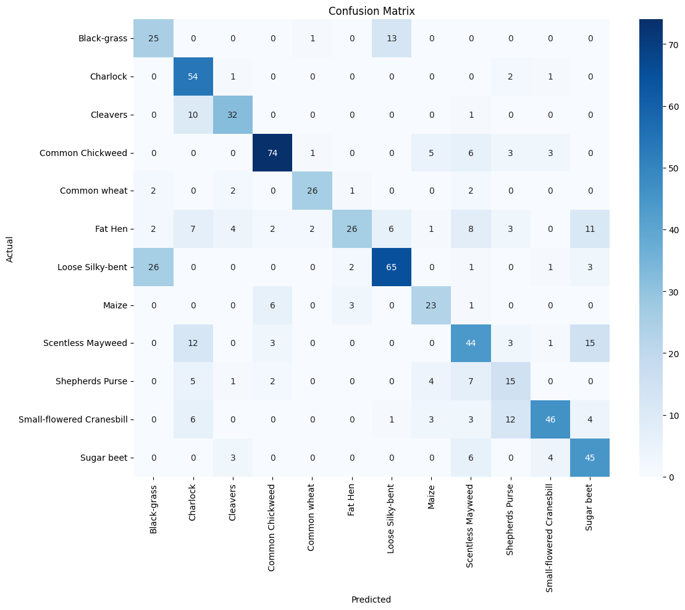

Business question
How accurately can a CNN distinguish visually similar seedling species from images?
Approach
How the work was done
- Normalized 4,750 RGB images and used stratified splits of 3,325 training, 712 validation and 713 test images. Trained a TensorFlow/Keras CNN with augmentation and early stopping.
- Evaluated the model on a held-out test set across 12 plant species.
- Compared class-level F1 scores to identify where the classifier was more reliable and where visually similar species remained difficult.
Results
What the analysis shows
- Overall test accuracy was 66.62% across the 12 classes.
- Common Chickweed and Common wheat were the strongest classes at 0.83 F1 each.
- Shepherd’s Purse remained challenging at 0.42 F1; Fat Hen scored 0.50 and Scentless Mayweed 0.56.
From the project
The images and the classification errors

Examples from the image dataset
These labeled examples show variation in leaf shape, lighting and background. These examples give context for the 12-species classification task.

Which species are confused
Diagonal cells are correct classifications. Off-diagonal counts show which labels need closer review, including confusion between Black-grass and Loose Silky-bent. The model correctly labeled 475 of 713 test images.
Business relevance
What this makes easier to decide
Class-specific performance suggests the classifier is best positioned as a first-pass sorting aid, with additional review for visually similar species.